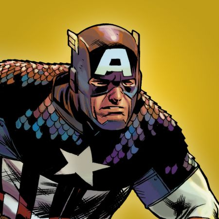

Captain America est le pseudonyme de Steve Rogers, l'un des super-héros les plus emblématiques de l'univers Marvel,créé en décembre 1940 par Joe Simon et Jack Kirby. En savoir plus.. Retour à l'accueil